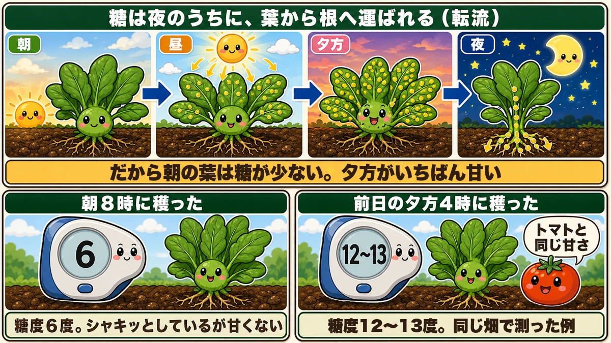
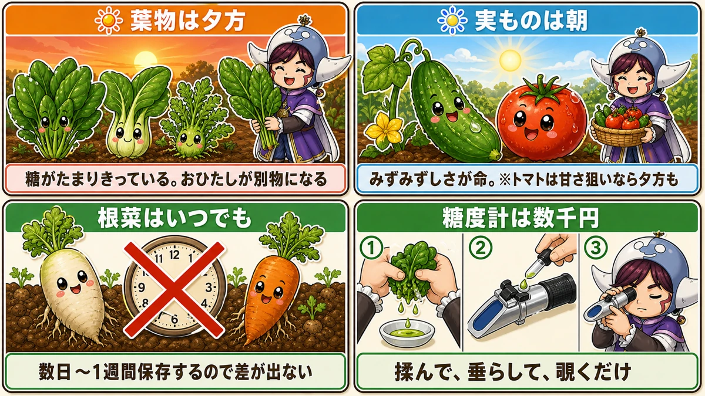
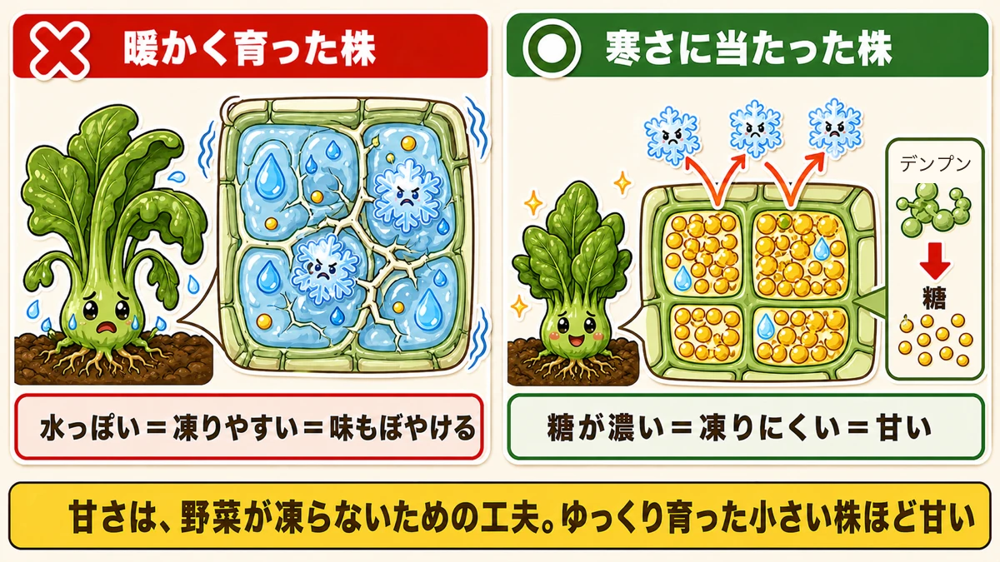
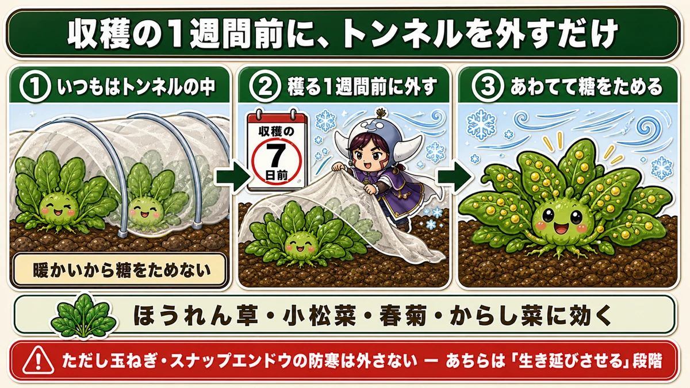
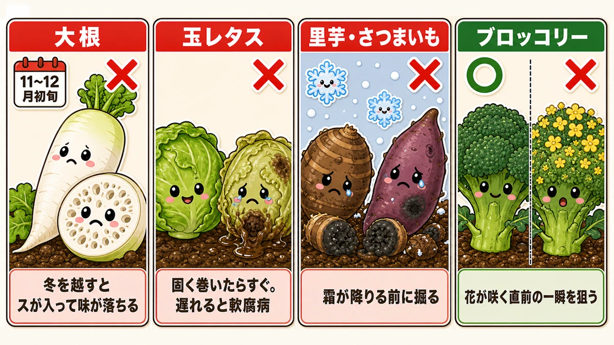
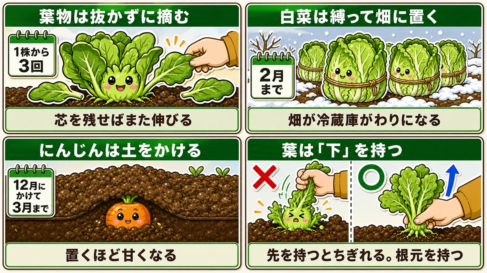

Morning-picked spinach isn't sweet 🥬 The sugar moves out of the leaf overnight

🥬 "I grew it myself and the flavour is somehow vague."
🥬 "Picked-this-morning is the best, isn't it?"
🥬 "I know winter vegetables are sweeter. Why?"
Hello, I'm Eiko. Eight years of growing vegetables organically and without pesticides, and a teaching licence in science.
The headline:
Spinach picked in the morning isn't sweet.
I had this the wrong way round for years. Morning-picked is what shops advertise, after all.
One garden's measurements with a refractometer:
- Spinach cut at 8 a.m. — 6 °Brix
- Spinach cut at 4 p.m. the previous day — 12–13 °Brix
Same plot, double the reading. And 12–13 is about what a tomato people call sweet measures. Spinach at tomato sweetness — purely by changing the hour you cut it.
Why mornings aren't sweet

What this diagram says （図解の文字）
- Sugar travels from the leaves down to the roots overnight (translocation)
- morning / midday / evening / night
- "So the morning leaf is empty. Evening is the sweetest"
- "Cut at 8 a.m." — 6 — "6 °Brix. Crisp, but not sweet"
- "Cut at 4 p.m. the day before" — 12–13 — "as sweet as a tomato", "measured in the same plot"
Plants make sugar by photosynthesis. The question is where that sugar is.
Sugar moves house overnight
- Sun comes up → photosynthesis starts
- Through the day, sugar accumulates in the leaves
- By evening the leaves are full of it
- Overnight, that sugar is carried down into stem and root
- By morning, leaf sugar is at its lowest
That overnight movement is called translocation. A morning-picked leaf is a leaf that has just been emptied.
Why at night?
By day the leaf is busy running a factory. Leave the product stacked on the factory floor and the line slows down. So it's moved to the warehouse overnight — and the warehouse is the stem and the root.
No photosynthesis at night, so the plant can concentrate on haulage. Factory and warehouse, day and night.
Which is why morning vegetables are crisp
Morning picking isn't pointless — it's a different trade:
- Full of water, and crisp
- But low in sugar
- And slightly harsher in flavour
As the sun works on it, the plant loses water, so an evening vegetable isn't as taut as a morning one.
Morning = juicy, not sweet. Evening = sweet, less juicy. Neither is correct; it depends what you want to eat.
So when should you pick?

What this diagram says （図解の文字）
- Leafy crops: evening — "the sugar has fully accumulated; it makes a different dish"
- Fruiting crops: morning — "juiciness is the point. (Tomatoes: evening, if you're after sweetness)"
- Root crops: any time — "they're stored for days to a week, so it makes no difference"
- "A refractometer costs very little" — "crush, drip, look"
Leafy crops: evening
Spinach, komatsuna, chrysanthemum greens, mizuna — evening, without hesitation.
With a leaf crop you're eating the factory itself, so it makes sense to take it when the sugar is at its peak. Spinach cut in the evening really is a different vegetable. I've gone out to the plot at dusk ever since — which is a pleasant time to be there anyway.
Fruiting crops: morning
A cucumber lives on its crispness; lose that and half the point is gone. Pick fruiting crops in the morning.
Tomatoes are the exception. If you want sweetness, evening is an option — morning to eat raw, evening to cook with, roughly.
Root crops: don't worry about it
Radish, carrot, potato — you don't eat these the moment you lift them. Stored for days or a week, the hour makes no difference.
One exception: young carrots eaten raw in a salad are sweeter picked in the evening.
A refractometer is cheap
You can measure all of this yourself. A handheld refractometer costs very little:
- Crush a leaf and squeeze out the juice
- Drop it onto the lens
- Close the cover and look through
Light bends differently depending on sugar concentration, and you read the number off a scale. Excellent fun with children.
Cold makes them sweet — as antifreeze

What this diagram says （図解の文字）
- How the antifreeze works
- Grown warm — "watery = freezes easily = vague flavour"
- Exposed to cold — starch → sugar — "concentrated sugar = harder to freeze = sweet"
- "Sweetness is the plant's way of not freezing. The slower-grown, smaller plant is the sweeter one"
Why are winter vegetables sweet? So they don't freeze.
Vegetables make their own antifreeze
Exposed to cold, a plant converts the starch stored in its cells into sugar.
Sugar solution freezes less readily than plain water. Raise the sugar concentration inside a cell and that cell is harder to freeze.
So a winter vegetable is making antifreeze in order to survive — and we eat it and call it sweet. Slightly impertinent of us, and a very neat arrangement.
Which means small, slow-grown plants are the sweet ones
A plant that grew slowly and stayed compact has the higher sugar concentration.
Pushed along with feed and water, a plant is watery and dilute — so it freezes more easily and tastes of less.
"Bigger is better" simply doesn't hold for winter vegetables. The short, stocky ones are the good ones. Cold-hardiness and flavour come out of the same mechanism.
Cold-finishing: expose them deliberately, a week before

What this diagram says （図解の文字）
- Just take the tunnel off a week before you harvest
- ① "normally under a tunnel" — "warm, so it doesn't store sugar"
- ② "take it off a week before" — 7 days before harvest
- ③ "it hurriedly stores sugar"
- "Works on spinach, komatsuna, chrysanthemum greens and mustard greens"
- "But don't uncover onions or sugar snaps — for those it's about survival, not sweetness"
You can use this mechanism deliberately. In Japanese it's called kanjime — cold-finishing.
Take the tunnel or fleece off a week before you harvest. That's the whole method; the cold does the rest.
Why it works
Inside a tunnel it's warm, so the plant has decided there's no risk of freezing and sees no need to store sugar.
Uncover it just before harvest and it's suddenly cold — so it hurries to store sugar, and you pick it at that moment. Faintly underhand, and it works.
Which crops
- Spinach — the classic, and the biggest difference. Start here
- Komatsuna and chrysanthemum greens — works well
- Mustard greens — in warm weather they're merely hot; after cold, sweetness comes up under the heat
About a week beforehand. Uncover too early and cold damages them, so watch the forecast.
Miss the window and the sweetness goes

What this diagram says （図解の文字）
- Radish — "through to early winter"; "left over winter it goes pithy and loses flavour"
- Hearting lettuce — "as soon as it's firm. Late means soft rot"
- Taro and sweet potato — "lift before the frosts"
- Broccoli — "aim for the moment just before the flowers open"
Radish — it goes pithy
Left standing, a radish develops pithiness: small cavities form inside, the water goes, and the texture turns spongy. The flavour goes with it.
Lift before deep winter. And a spring crop runs away from you — spring growth is fast, and late means suddenly hot and woody.
Hearting lettuce — cut it as soon as it's firm
Once it's tight, don't wait. Late brings soft rot (which collapses the plant from the base) and aphids.
Taro and sweet potato — before the frost
These have a deadline. Frost damages them and they start to rot. When frost is forecast, lift before it arrives.
Broccoli — just before it flowers
That green head is a cluster of flower buds. Late, and yellow flowers open — and then it's tough and inedible.
So harvesting broccoli means catching the moment just before flowering: beads swelling, no yellow yet.
With sprouting broccoli, the side shoots don't grow in deep winter — pick them small. Waiting achieves nothing.
How you pick changes the flavour too

What this diagram says （図解の文字）
- Pick leafy crops, don't pull them — "three harvests per plant", "leave the centre and it grows again"
- Tie Chinese cabbage and leave it in the ground — "until February", "the plot becomes the fridge"
- Earth carrots over — "cover in December, keeps to March", "sweeter the longer it stays"
- Hold the leaves low down — "hold the tips and they tear; hold at the base"
Pick leaves, don't pull plants
Take the outer leaves and leave the central growing point, and it grows again. About three harvests per plant, each one fresh.
Tie a Chinese cabbage and leave it where it is
Instead of harvesting, wrap the outer leaves round it and tie with string. The plot becomes your fridge and it keeps until late winter. Cut one when you need one — the most luxurious way to eat it, I think.
Earth up your carrots and store them in the ground
Cover them with soil in early winter and they keep in the ground until early spring. They're in the cold the whole time, so they get sweeter the longer they stay — cold-finishing, extended.
Hold the leaves low
Pulling a carrot or a radish by the tips of the leaves tears them off. Grip at the base of the leaves, right at the crown, and pull straight up. That one change removes most of the failures.
Science bit: are you eating the factory or the warehouse? 🔬
Divide a vegetable in two:
- Leaves — the factory, where photosynthesis happens
- Stem and root — the warehouse, where sugar is stored
Why root vegetables are sweet
No coincidence: you're eating the warehouse itself. Sugar made by the leaves all day is delivered there every night, for months. That swollen root is the accumulated result — and we help ourselves to the savings.
Though warehouses differ: some store sugar as sugar, some convert it to starch. Potatoes are starch, so they aren't sweet. Sweet potatoes convert starch back to sugar when heated — which is why baking one makes it so sweet.
Why only leafy crops change with the hour
The factory's contents turn over in a day — empty in the morning, full in the evening. So the hour changes the flavour.
A warehouse fills over months. One day's traffic is a rounding error, so the hour makes no difference.
Leaves in the evening, roots whenever. That's the reason.
To sum up
- ✅ Sugar is carried out of the leaves overnight, so morning leaves are the emptied ones
- ✅ One measured example: 6 °Brix at 8 a.m. versus 12–13 at 4 p.m.
- ✅ Leaves in the evening, fruit in the morning, roots whenever
- ✅ Morning = juicy but not sweet; evening = sweet but less crisp
- ✅ Winter sweetness is antifreeze: starch converted to sugar
- ✅ Small, slow-grown plants are the sweet ones
- ✅ Cold-finishing: uncover a week before harvest
- ✅ Don't uncover onions or sugar snaps — different purpose
- ✅ Radish goes pithy; lettuce rots; taro and sweet potato must beat the frost; broccoli is a single moment
- ✅ Pick, don't pull; tie the Chinese cabbage; earth up the carrots; hold the leaves low
You don't have to do all of it. Next time you want spinach, go out at four in the afternoon instead of first thing. That alone is the whole experiment 🥬
Thank you for reading!